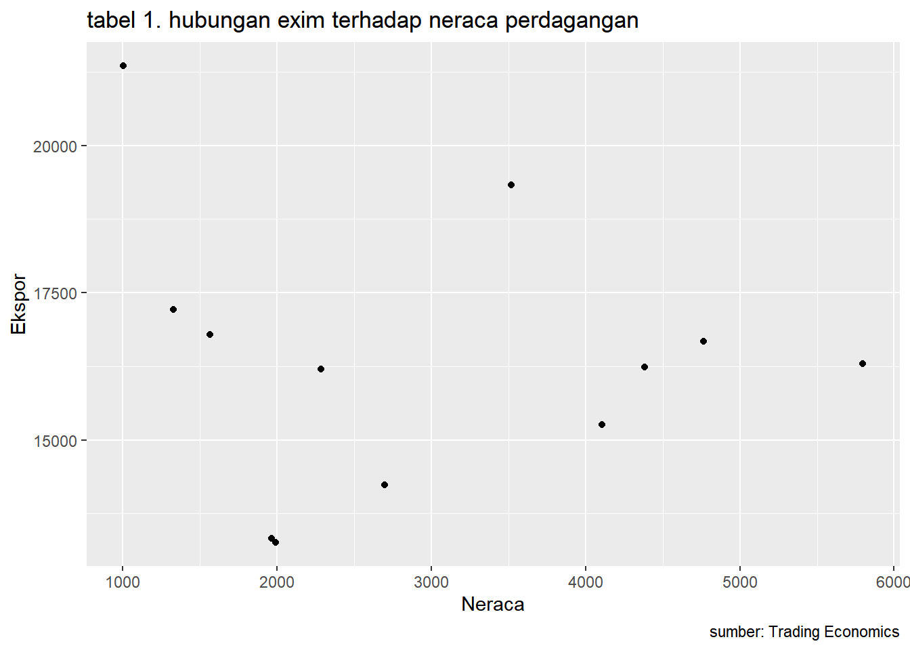

library(tidyverse)
library(readxl)
library(WDI) # tambahkan library lain jika diperlukanPengaruh Ekspor dan Impor Terhadap Neraca Perdagangan Indonesia
Metode Penelitian Politeknik APP Jakarta

1 Pendahuluan
1.1 Latar belakang
Perdagangan internasional adalah kegiatan jual beli yang dilakukan oleh masyarakat, perusahaan, atau pemerintahan satu negara dengan negara lainnya berupa barang ataupun jasa yang didasarkan pada kesepakatan bersama. Ekspor dan impor merupakan bagian dari perdagangan internasional. Ekspor adalah aktivitas pengeluaran barang ataupun jasa dari daerah pabean Indonesia, sedangkan impor adalah kegiatan memasukkan barang ataupun jasa ke daerah pabean Indonesia. Kegiatan ekspor dan impor dapat memacu pertumbuhan ekonomi. Ekspor dapat meningkatkan devisa suatu negara sedangkan impor mampu memenuhi kebutuhan dalam negeri. Kegiatan tersebut mempengaruhi neraca perdagangan suatu negara. Neraca perdagangan adalah selisih antara ekspor dan impor, yang dimana akan terjadi surplus perdagangan apabila nilai ekspor lebih besar daripada impor. Sedangkan jika nilai impor lebih besar dibandingkan ekspor, maka neraca perdagangan akan mengalami defisit. Dari penjelasan tersebut, nilai ekspor dan impor berkaitan dengan rumus neraca perdagangan yaitu nilai ekspor dikurangi nilai impor (NX = EX – IM), sehingganya nilai ekspor dan impor merupakan penentu dalam mengetahui nilai dari neraca perdagangan (Latif, Mardiana dan Yusuf, 2022).
1.2 Ruang lingkup
Untuk memfokuskan pembahasan mengenai “Pengaruh Ekspor dan Impor Terhadap Neraca Perdagangan Indonesia”, maka dari itu permasalahan yang dikaji perlu dibatasi sebagai berikut:
a. Data ekspor dan impor berasal dari portal data milik kementerian perdagangan
b. Batasan periode data yang digunakan adalah 2017-2022
c. Hanya menganalisis pengaruh ekspor dan impor terhadap neraca perdagangan Indonesia
1.3 Rumusan masalah
Berdasarkan latar belakang yang telah tertera, masalah dirumuskan menjadi:
a. Apa keterkaitan ekspor dan impor dalam neraca perdagangan?
b. Apa pengaruh ekspor dan impor terhadap neraca perdagangan di Indonesia pada tahun 2021.
1.4 Tujuan dan manfaat penelitian
Tujuan
Tujuan dari penelitian berdasarkan perumusan masalah yang telah tercantum adalah:
a. Untuk menganalisis keterkaitan ekspor dan impor dalam neraca perdagangan.
b. Untuk mengetahui pengaruh ekspor dan impor terhadap neraca perdagangan Indonesia tahun 2021.
Manfaat
Manfaat yang diharapkan dari penelitian atas pengaruh ekspor dan impor terhadap neraca perdagangan Indonesia adalah:
a. Menjadi tambahan wawasan dan informasi mengenai dampak perdagangan internasional khususnya ekspor dan impor terhadap perekonomian Indonesia bagi para pembaca.
b. Penelitian ini dapat menjadi referensi sebagai pertimbangan untuk penelitian selanjutnya.
1.5 Package
Packages yang digunakan sebagai berikut:
2 Studi pustaka
Neraca Perdagangan
Neraca Perdagangan adalah salah satu komponen penting dari pendapatan nasional terutama bagi negara yang menganut kebebasan ekonomi (Nibret, 2018). Neraca Perdagangan sendiri merupakan selisih dari perbedaan nilai impor dan ekspor pada periode waktu tertentu (Ashraf & Joarder, 2009). Sehingga dapat terlihat bahwa variabel penyusun dari neraca perdagangan terdiri dari ekspor dan impor. Sebagai komponen dari Growth Domestic Product menurut pengeluaran, ekspor dan impor akan mewakili performa perdagangan internasional. Maka dari itu nilai ekspor akan menjadi penentu besarnya pendapatan sebuah negara dan masyarakatnya (Huda & Widodo, 2017). Kondisi neraca perdagangan ditentukan oleh nilai ekspor dan impor suatu negara tersebut. Neraca perdagangan akan mengalami kondisi surplus jika nilai ekspor yang dilakukan melebihi nilai impor negara tersebut. Sedangkan sebaliknya, suatu negara mengalami defisit neraca perdagangan jika nilai ekspor kurang dari nilai impor negara tersebut (Ashraf & Joarder, 2009).
Ekspor
Ekspor memiliki banyak pengertian, baik pengertian yang berasal dari undang-undang maupun para ahli. Berikut ini adalah beberapa pengertian ekspor. Menurut (Undang-Undang Republik Indonesia Nomor 17 Tahun 2006), ekspor adalah “kegiatan mengeluarkan barang dari daerah pabean.”. Ekspor adalah mengeluarkan barang dari peredaran dalam masyarakat dan mengirimkan ke luar negeri sesuai ketentuan pemerintah dan mengharapkan pembayaran dalam valuta asing (M.S, Amir, 2009:1). Menurut Marzuqi Yahya (2016;16) Ekspor adalah pengiriman barang ke luar daerah dari wilayah Negara Indonesia. Ekspor merupakan penjualan barang dan jasa yang dihasilkan oleh penduduk suatu negara kepada negara lain (Todaro, 1983). 2.3
Impor
Impor Berdasarkan undang-undang No.17 Tahun 2006 Tentang Kepabeanan Pasal 1. Yang dimaksud dengan impor yaitu kegiatan memasukan barang kedalam daerah pabean. Impor bisa di artikan sebagai kegiatan memasukan barang dari suatu negara (luar negeri) ke dalam wilayah pabean negara lain. Hal ini berati melibatkan 2 negara yang memiliki kepentingan dan peraturan perundang-undangan yang berbeda, dimana negara satu sebagai eksportir dan negara lainnya menjadi importir (Andi Susilo, 2013). Definisi impor menurut bea cukai adalah kegiatan memasukan barang ke dalam daerah pabean, termasuk didalamnya adalah memasukan barang melalui mekanisme barang kiriman dijelaskan dalam dasar hukum PMK-182/PMK.04/2016 mengenai ketentuan impor barang kiriman.
Kerangka Penelitian

3 Metode penelitian
3.1 Data
Data yang digunakan dalam penelitian ini adalah data sekunder terkait ekspor, impor, dan neraca perdagangan Indonesia. Pengumpulan data yang dilakukan menggunakan metode penelitian riset pustaka dengan mengamati website resmi Badan Pusat Statistik, portal data milik Kementerian Perdagangan Republik Indonesia, dan website resmi Trading Economics. Jenis data yang digunakan pada penelitian ini adalah data sekunder berdasarkan deret waktu (time series).
3.2 Metode Analisis
Menggunakan R untuk mengolah data, zotero untuk membuat daftar pustaka, Quarto dan R untuk regresi, dan Github untuk menjadikan penelitian ini menjadi html.
dat<-read_excel('VARIABEL REGRESI.xlsx')
ggplot(data=dat,aes(x=Y,y=X2)) +
geom_point() + # setiap nambah command, selalu kasih tanda +
labs(title="tabel 1. hubungan exim terhadap neraca perdagangan",
x="Neraca",
y="Ekspor",
caption = "sumber: Trading Economics") # yang terakhir ga perlu +Warning: Removed 1 rows containing missing values (geom_point).
3.3 Metode analisis
Metode yang dipilih adalah regresi univariat atau Ordinary Least Square (OLS) dengan 1 variabel independen. Penelitian ini merbaksud mencari hubungan antara neraca perdagangan dan ekspor impor. Spesifikasi yang dilakukan adalah:
\[ y_{t}=\beta_0 + \beta_1 x_t+\mu_t \] di mana \(y_t\) adalah neraca perdagangan dan \(x_t\) adalah ekspor dan impor. Terlihat titik-titik yang berjarak sehingga menunjukkan bahwa error bersifat unbiased tetapi tidak efisien.
4 Pembahasan
4.1 Pembahasan masalah
Beberapa tujuan Indonesia melakukan ekspor dan impor adalah untuk mengembangkan industri dalam negeri, memenuhi kebutuhan dalam negeri, serta menambah devisa dan neraca pembayaran Indonesia. Neraca perdagangan digunakan untuk melihat perkembangan ekonomi suatu negara. Dengan dilakukannya ekspor, suatu negara dapat menjalin kerja sama dengan negara lain, meningkatkan produktivitas industri dalam negeri, serta mendapatkan keuntungan melalui pembayaran dan piutang. Sedangkan kegiatan impor dilakukan karena kebutuhan dalam negeri yang sangat tinggi sehingga produksi dalam negeri tidak mencukupi kebutuhan tersebut dan biaya produksi dalam negeri lebih mahal. Berikut ini adalah tabel ekspor dan impor Indonesia tahun 2021. Tabel 1. Total Nilai Ekspor dan Impor Migas dan Nonmigas Tahun 2021.
| Tahun 2021 | Ekspor | Impor |
|---|---|---|
| Januari | 15.293,67 | 13.329,90 |
| Februari | 15.256,17 | 13.264,97 |
| Maret | 18.354,45 | 16.787,51 |
| April | 18.490,73 | 16.204,34 |
| Mei | 16.932,92 | 14.234,82 |
| Juni | 18.547,80 | 17.218,46 |
| Juli | 19.369,90 | 15.263,12 |
| Agustus | 21.443,20 | 16.678,89 |
| September | 20.618,80 | 16.234,15 |
| Oktober | 22.091,00 | 16.293,62 |
| November | 22.357,70 | 19.328,19 |
| Desember | 10.000USD | 21.352,02 |
Sumber : website resmi Trading Economics Indonesia melakukan ekspor dan impor migas dan nonmigas yang mempengaruhi pertumbuhan ekonomi. Migas adalah singkatan dari minyak dan gas yang memiliki tiga kategori ekspor yaitu, pertambangan minyak mentah dan gas, pengadaan gas, serta industri pengolahan hasil minyak. Sedangkan ekspor nonmigas terdiri dari kategori industri pengolahan, pertanian, dan lain-lain. Komoditi impor nonmigas yang dilakukan Indonesia beberapa diantaranya adalah besi dan baja, susu, dan sutera. Sedangkan beberapa komoditi ekspor migas berupa minyak mentah, udang, dan emas. Untuk mengetahui pengaruh ekspor dan impor terhadap neraca perdagangan, maka akan dilakukan perhitungan dengan rumus NX = EX – IM. Keterangan: NX: Neraca Perdagangan EX: Ekspor IM: Impor
| Tahun 2021 | Ekspor | Impor | Neraca Perdagangan |
|---|---|---|---|
| Januari | 15.293,67 | 13.329,90 | 1.963,76 |
| Februari | 15.256,17 | 13.264,97 | 1.991,19 |
| Maret | 18.354,45 | 16.787,51 | 1.566,94 |
| April | 18.490,73 | 16.204,34 | 2.286,39 |
| Mei | 16.932,92 | 14.234,82 | 2.698,11 |
| Juni | 18.547,80 | 17.218,46 | 1.329,34 |
| Juli | 19.369,90 | 15.263,12 | 4.106,48 |
| Agustus | 21.443,20 | 16.678,89 | 4.764,31 |
| September | 20.618,80 | 16.234,15 | 4.384,65 |
| Oktober | 22.091,00 | 16.293,62 | 5.797,38 |
| November | 22.357,70 | 19.328,19 | 3.517,11 |
| Desember | 10.000 | 21.352,02 | 1.005,68 |
Sumber : website resmi Trading Economics

-
Grafik 1. Nilai Ekspor, Impor, dan Neraca Perdagangan Tahun 2021 Tiga keadaan yang dapat dijelaskan dalam neraca perdagangan adalah defisit, surplus, dan perdagangan. Dimana neraca perdagangan mengalami surplus apabila nilai ekspor lebih besar daripada nilai impor, defisit terjadi jika nilai impor lebih besar daripada ekspor, dan neraca perdagangan dalam keadaan seimbang apabila nilai ekspor dan impor sama. Kegiatan ekspor dapat menambah penerimaan pembayaran dari negara lain seperti piutang, sedangkan impor menambah kewajiban untuk melakukan pembayaran seperti utang.
4.2 Analisis masalah
Hasil regresinya adalah
reg1<-lm(Y~X1+X2,data=dat)
summary(reg1)
Call:
lm(formula = Y ~ X1 + X2, data = dat)
Residuals:
Min 1Q Median 3Q Max
-0.0042391 -0.0014258 -0.0007703 0.0017482 0.0039376
Coefficients:
Estimate Std. Error t value Pr(>|t|)
(Intercept) 4.467e-04 6.640e-03 6.700e-02 0.948
X1 1.000e+00 5.723e-07 1.747e+06 <2e-16 ***
X2 -1.000e+00 6.487e-07 -1.541e+06 <2e-16 ***
---
Signif. codes: 0 '***' 0.001 '**' 0.01 '*' 0.05 '.' 0.1 ' ' 1
Residual standard error: 0.00289 on 9 degrees of freedom
(1 observation deleted due to missingness)
Multiple R-squared: 1, Adjusted R-squared: 1
F-statistic: 1.547e+12 on 2 and 9 DF, p-value: < 2.2e-16library(readxl)
reg1<-lm(Y~X1+X2,data=dat)
summary(reg1)
Call:
lm(formula = Y ~ X1 + X2, data = dat)
Residuals:
Min 1Q Median 3Q Max
-0.0042391 -0.0014258 -0.0007703 0.0017482 0.0039376
Coefficients:
Estimate Std. Error t value Pr(>|t|)
(Intercept) 4.467e-04 6.640e-03 6.700e-02 0.948
X1 1.000e+00 5.723e-07 1.747e+06 <2e-16 ***
X2 -1.000e+00 6.487e-07 -1.541e+06 <2e-16 ***
---
Signif. codes: 0 '***' 0.001 '**' 0.01 '*' 0.05 '.' 0.1 ' ' 1
Residual standard error: 0.00289 on 9 degrees of freedom
(1 observation deleted due to missingness)
Multiple R-squared: 1, Adjusted R-squared: 1
F-statistic: 1.547e+12 on 2 and 9 DF, p-value: < 2.2e-16Berdasarkan data ekspor, impor, dan neraca perdagangan Indonesia tahun 2021 dapat dilihat bahwa perkembangan ekspor dan impor selama tahun 2021 cukup tidak stabil sehingga neraca perdagangan menunjukkan bentuk yang fluktuatif. Nilai ekspor tertinggi terjadi pada bulan November sebesar 22.845,30 juta USD, nilai impor tertinggi terjadi pada bulan Desember sebesar 21.352,02 juta USD, dan nilai neraca perdagangan tertinggi terjadi pada bulan Oktober sebesar 5.797,38 juta USD. Nilai ekspor tahun 2021 cukup stabil mengalami peningkatan, walaupun terdapat sedikit penurunan pada bulan Februari, Mei, September, dan Desember. Nilai impor pada tahun 2021 selalu berada dibawah nilai ekspor. Nilai impor mengalami peningkatan dan penurunan yang cukup sigifikan. Pada bulan Maret, impor Indonesia mengalami peningkatan sekitar tiga juta USD, lalu mengalami penurunan di bulan Mei sekitar dua juta USD, kembali mengalami peningkatan sekitar tiga juta USD pada bulan Juni, kembali menurun pada bulan Juli sekitar dua juta USD, lalu pada bulan November, impor Indonesia mengalami peningkatan sekitar tiga juta USD.
Kesulitan yang didapat adalah saat menginput data. Jika tidak memiliki akun di Trading Economics, maka data yang ditampilkan tidak dapat di unduh sehingga harus diketik manual pada Microsoft Excel. Selain itu, terdapat kesulitan dalam pengolahan data dari BPS. Data tersebut sulit untuk diolah karena cukup berantakan dan tidak bisa dioperasikan langsung pada excel seperti di jumlah secara otomatis setelah di unduh.
5 Kesimpulan dan Saran
Kesimpulan
Berdasarkan regresi yang telah dilakukan, maka dapat disimpulkan bahwa setiap impor satu juta USD itu dapat mengurangi neraca perdagangan sebesar 0.0004467 juta USD, sedangkan setiap ekspor satu juta USD menambah neraca perdagangan sebesar 0.0004467 juta USD. Kegiatan ekspor dan impor mempengaruhi keadaan neraca perdagangan suatu negara. Apabila nilai ekspor lebih besar dibandingkan nilai impor, maka neraca perdagangan akan surplus yang dimana hal tersebut menguntungkan karena menambah pendapatan. Sebaliknya, apabila nilai impor lebih besar daripada nilai ekspor, maka suatu negara harus berhati-hati karena hal tersebut merugikan yang dimana menunjukkan utang atau kewajiban suatu negara lebih besar daripada pendapatan. Kegiatan ekspor dan impor yang terjadi pada tahun 2021 menunjukkan pengaruh yang positif bagi neraca perdagangan Indonesia. Walaupun nilai neraca perdagangan yang didapatkan dari selisih ekspor dan impor menunjukkan grafik yang fluktuasi, neraca perdagangan Indonesia selalu mengalami surplus selama dua belas bulan pada tahun 2021. Nilai neraca perdagangan tertinggi terjadi pada bulan Oktober karena pada bulan ini nilai ekspor cukup tinggi dan nilai impor yang rendah sehingga menghasilkan selisih sebesar 5.797,38 juta USD. Sedangkan nilai surplus neraca perdagangan terendah pada tahun 2021 terjadi pada bulan Desember yang menunjukkan nilai ekspor dan impor yang sama-sama tinggi sehingga selisih yang dihasilkan hanya sebesar 1.005,68 juta USD.
Saran
1. Pemerintah harus lebih berhati-hati dalam mengendalikan ekspor dan impor untuk memaksimalkan keuntungan negara dan mencegah terjadinya defisit.
2. Diperlukan regulasi yang tegas dan jelas terkait Batasan ekspor dan impor agar neraca perdagangan dapat terkendali dengan stabil.
6 Referensi
APBI-ICMA.org. (t.t.). Komoditas Ekspor Unggulan Indonesia, Sawit hingga Batu Bara | APBI-ICMA. Diambil 18 Januari 2023, dari http://www.apbi-icma.org/news/6168/komoditas-ekspor-unggulan-indonesia-sawit-hingga-batu-bara
Latif, A., Mardiana, A., & Yusuf, H. N. H. (2022). Analysis of the Increase in Exports and Imports and Their Effect On the Trade Balance in Indonesia In 2017-2021. Gorontalo Development Review, 5(2), Art. 2. https://doi.org/10.32662/golder.v0i0.2428
Neraca Perdagangan Indonesia | Satu Data Perdagangan. (t.t.). Diambil 18 Januari 2023, dari https://satudata.kemendag.go.id/data-informasi/perdagangan-luar-negeri/neraca-perdagangan-indonesia
Nilai ekspor migas dan nonmigas. (2018, Maret 12). https://lokadata.beritagar.id/. https://lokadata.beritagar.id/chart/preview/nilai-ekspor-migas-dan-nonmigas-1520850347
Perkembangan Impor Non Migas (Komoditi) | Satu Data Perdagangan. (t.t.). Diambil 15 Januari 2023, dari https://satudata.kemendag.go.id/data-informasi/perdagangan-luar-negeri/impor-non-migas-komoditi
TRADING ECONOMICS | 20 million INDICATORS FROM 196 COUNTRIES. (t.t.). Diambil 15 Januari 2023, dari https://tradingeconomics.com/